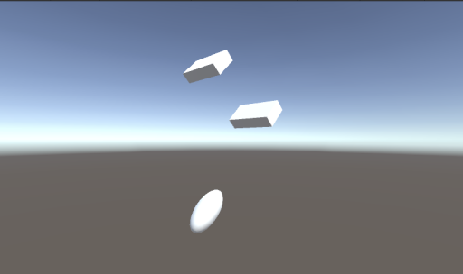

次はゲームオブジェクトを作成してみましょう。
ゲームビューに表示される人や車、建物などのキャラクターのことを「ゲームオブジェクト(GameObject)」と呼びます。
目に見える物体の他にもカメラ、光源、音楽などもゲームオブジェクトに含まれます。
ここでは例として立方体(Cube)と球(Sphere)のゲームオブジェクトを画面上に配置してみましょう。
まず立方体です。
以下の手順に従って画面上に配置して下さい。
ヒエラルキーで右クリックして 3D Object → Cube を選択すると画面上に立方体のゲームオブジェクトが配置される
座標を変更する。インスペクターの Transform の Position の (x,y,z) の値(単位はメートル)を変えると指定した座標にゲームオブジェクトが移動する。今回は (x,y,z) をそれぞれ (1,2,0) にする
回転方向を変更する。インスペクターの Transform の rotation の (x,y,z) の値(単位は度)を変えると指定した軸を中心にゲームオブジェクトが回転する。今回は (x,y,z) をそれぞれ (45,45,0) にする
サイズを変更する。インスペクターの Transform の Scale の (x,y,z)の値(単位はメートル)を変えると指定した値にゲームオブジェクトの大きさが変わる。今回は (x,y,z) をそれぞれ (2,1,0.5) にする
次に球です。
ヒエラルキーで右クリックして 3D Object → Sphere を選択すると画面上に球のゲームオブジェクトが配置される
座標を変更する。インスペクターの Transform の Position の (x,y,z) の値をそれぞれ (-1,-2,0) にする
回転方向を変更する。インスペクターの Transform の rotation の (x,y,z) の値をそれぞれ (0,-45,45) にする
サイズを変更する。インスペクターの Transform の Scale の (x,y,z)の値をそれぞれ (2, 1, 1) にする
ヒエラルキーでゲームオブジェクトをクリックするとそのゲームオブジェクトが選択され、インスペクターに情報が表示されます。
以下の手順で立方体と球を交互に選択してみましょう。
ヒエラルキーの Cube をクリックしてインスペクターに Cube の情報が表示されることを確認する。
同様に Sphere をクリックしてインスペクターに Sphere の情報が表示されることを確認する。
ヒエラルキーで名前を変更したいゲームオブジェクトをマウスで長押しするか、または右クリック → Rename で出来ます。
以下の手順で立方体と球の名前を変更してみましょう
ヒエラルキーの Cube をマウスで長押しするか、または右クリック → Rename を選択して HAKO に名前を変更する。
同様に Sphere を TAMA に名前を変更する。
ヒエラルキーでコピーしたいゲームオブジェクトの上で右クリック → Dupulicate で出来ます。
以下の手順で HAKO をコピーしてみましょう。
ヒエラルキーの HAKO を右クリックして Dupulicate を選択して HAKO(1) という名前のコピーを作成する。
HAKO(1) を HAKO2 に名前を変更する。
位置が重なっているので変更する。 HAKO2 の インスペクターの Transform の Position の (x,y,z) をそれぞれ (-1,4,0) にする。
同様に HAKO をコピーして HAKO3 を作る。 HAKO3 のインスペクターの Transform の Position の (x,y,z) をそれぞれ (-1,-4,0) にする。
ヒエラルキーウィンドウで削除したいゲームオブジェクトの上で右クリック → Delete で出来ます。
以下の手順で HAKO3 を削除してみましょう。
ヒエラルキーの HAKO3 を右クリック → Delete を選択して削除する。
この時点で図1の様にゲームビューが表示されていればOKです。
図1. ここまでの画面
